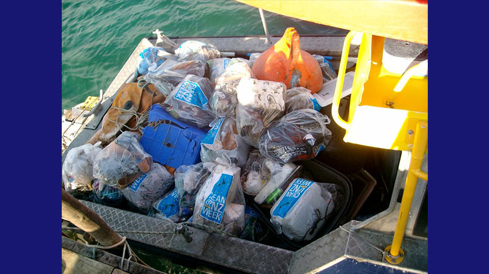
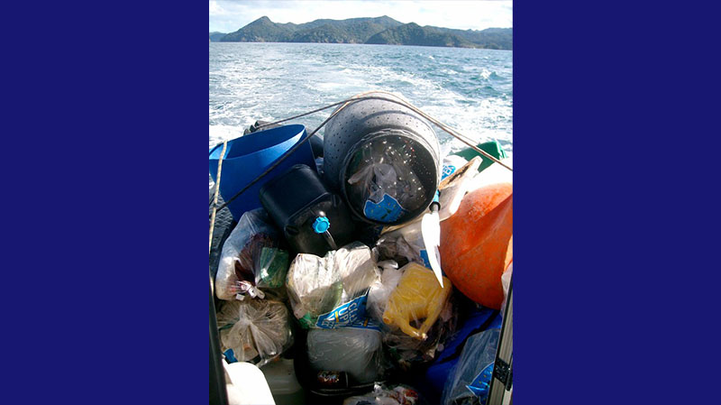
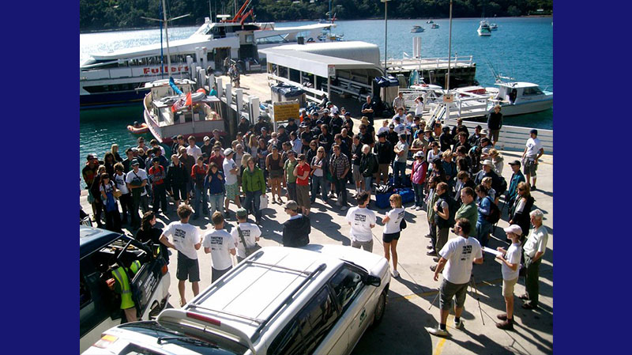
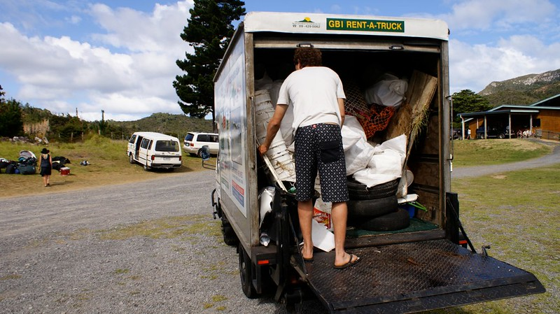
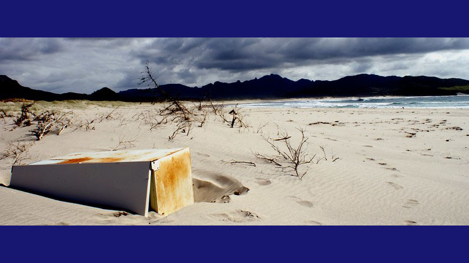
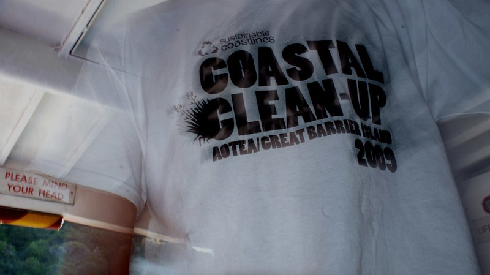
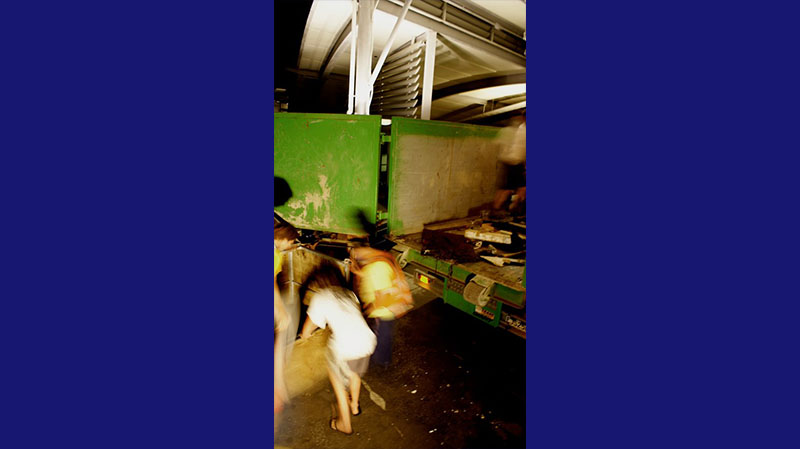
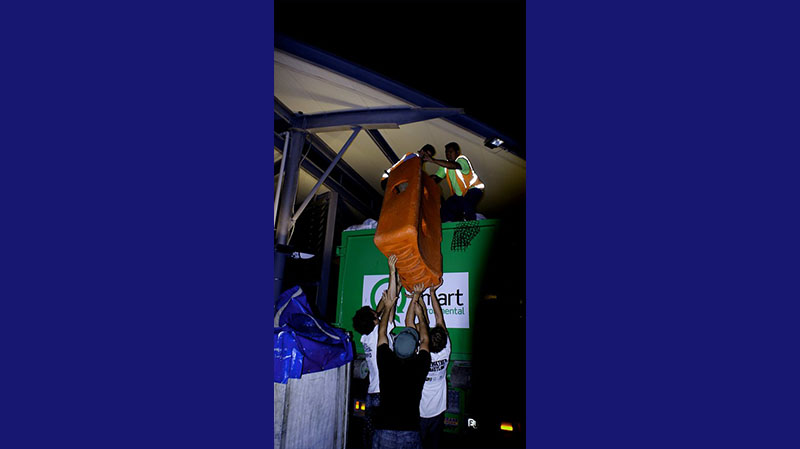
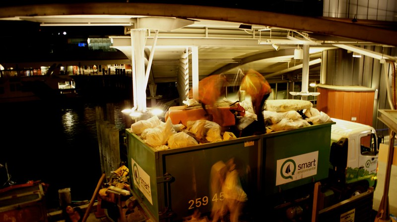
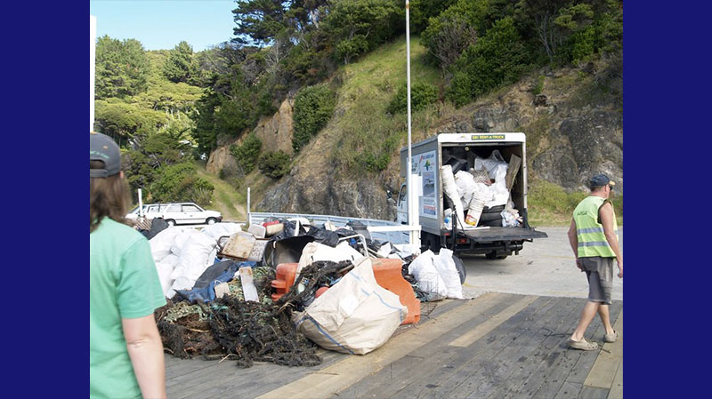

1 / 15

2008 - The Seeds
2 / 15

2009 - The Defining Year
3 / 15

Hayden from Waitemata Harbour Clean-up Trust cleans the
beaches - April 3, 2009
4 / 15

Volunteers with their treasure - April 3, 2009
5 / 15

Boatload of rubbish now not on beaches - April 3, 2009
6 / 15

Full Boatload - April 4, 2009
7 / 15

Volunteer briefing at Typhena Wharf - April 4, 2009
8 / 15

The first truck loaded at Claris Club - April 4, 2009
9 / 15

Meadland Beache's Fridge - April 4, 2009
10 / 15

Great Barrier Coastal Cleanup - April 5, 2009
11 / 15

Rubbish returns to Auckland - April 5, 2009
12 / 15

Loaded truck - April 5, 2009
13 / 15

Truckload of rubbish loaded in Downtown Auckland - April 5,
2009
14 / 15

Pile of rubbish on Typhena Wharf - April 5, 2009
15 / 15

Conclusion
❮
❯